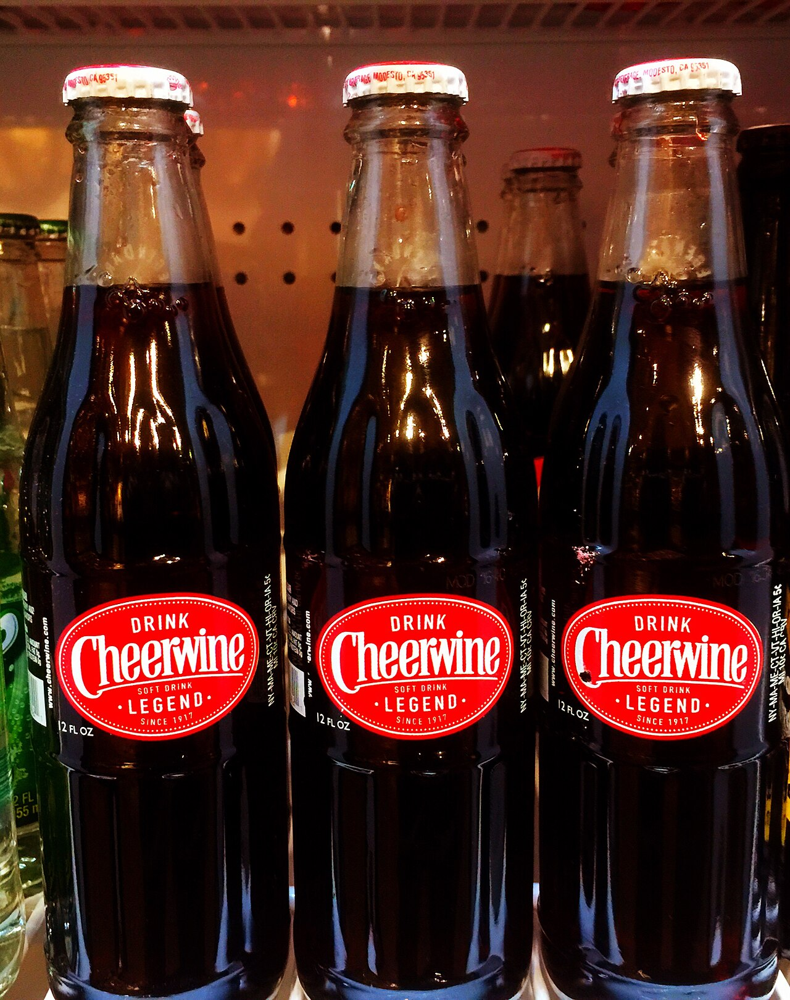
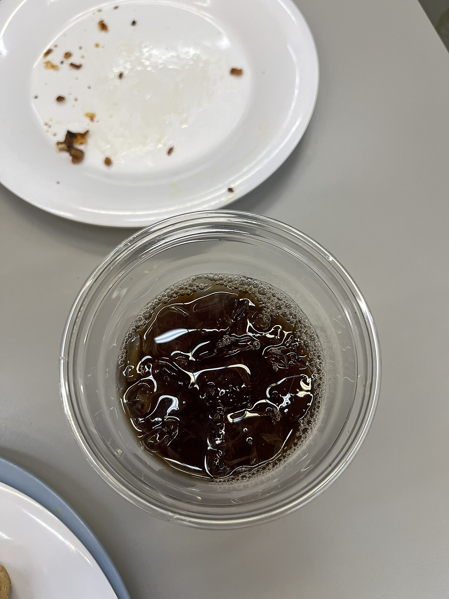
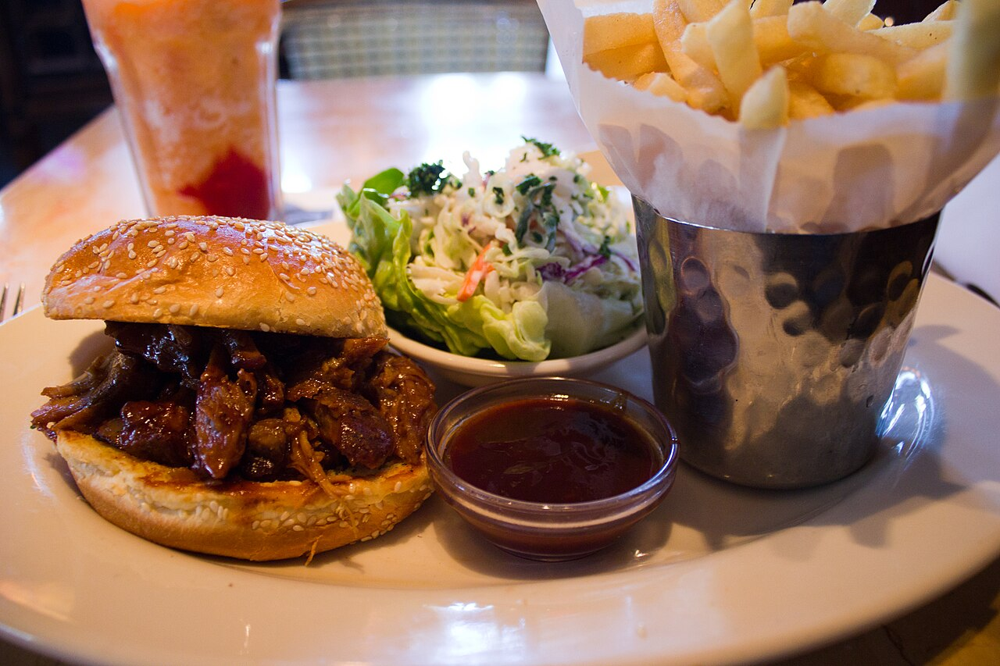
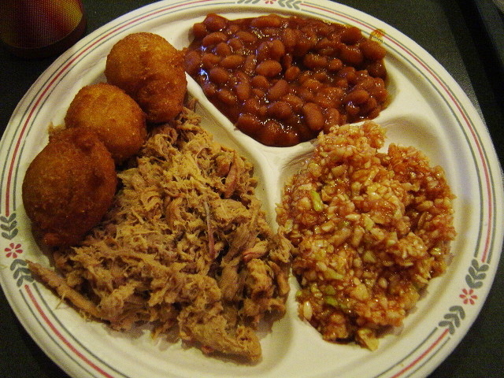
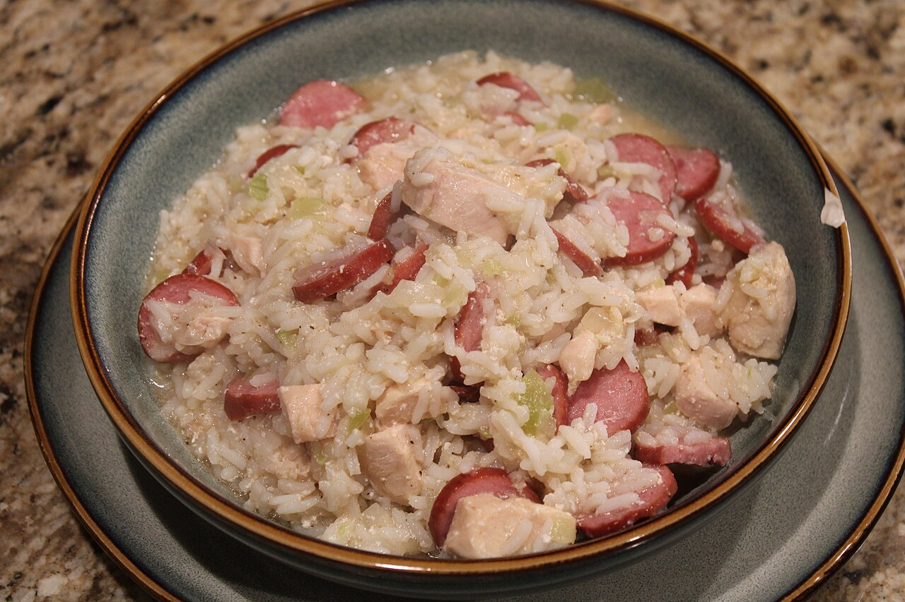
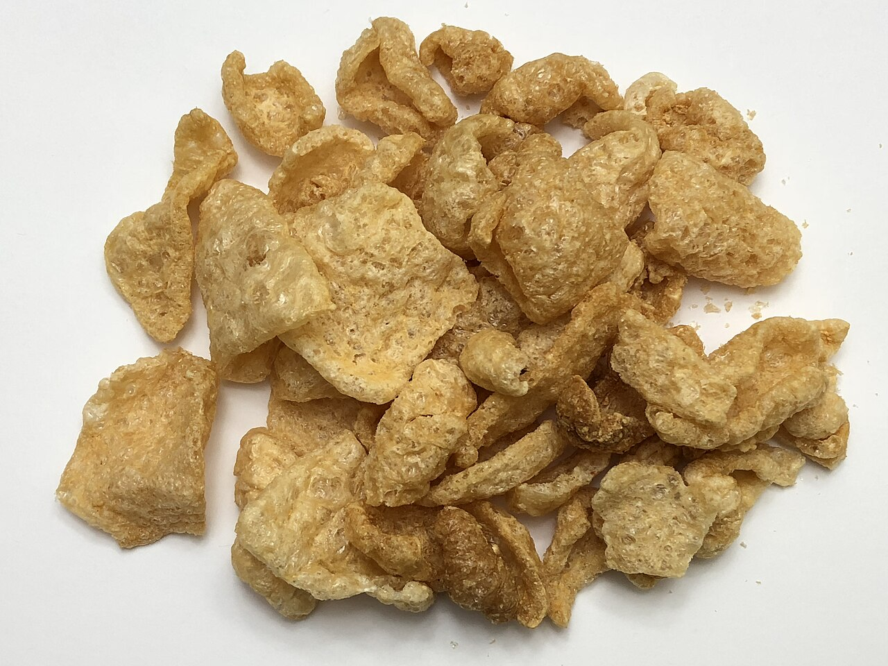

Carolina BarbecueDishes (27)
What is on the plate, the tray and the table.
Bread (2)
 cornbread
cornbreadcorn bread, corn sticks, cornsticks
A quick bread of cornmeal — meal, water or buttermilk, salt, fat, often egg and soda — baked in a pan, a skillet or a stick mould. It comes with eastern North Carolina barbecue in two forms.
 hushpuppies
hushpuppieshush puppies, hush-puppies, red horse bread
Balls or fingers of cornmeal batter — meal, a little flour, egg, buttermilk or water, salt, soda, often onion — dropped by the spoonful into hot oil and fried until the outside is crisp and dark gold and the inside soft…
Condiments (2)
Duke's, Duke's Mayonnaise
A bottled mayonnaise made in Mauldin, South Carolina, outside Greenville: egg yolks, oil and cider vinegar, with more yolk than most brands and no added sugar, which is where the tang comes from that the company sells…
sweet pickles, dill pickles, chow-chow
Cucumbers held in brine or vinegar until they sour, sliced into rounds or spears and put on the plate beside the meat, with the sandwich, or loose in a dish on the table.
Drinks (3)
Blenheim, Old #3, hot ginger ale
A ginger ale bottled at Hamer, in Dillon County, South Carolina, made with Jamaica ginger and sugar in mineral water from a spring in Marlboro County, and hot enough that the heat is the point of it.

CheerwineCheerwine soda, Retro Cheerwine, Original 1917 Formula
A cherry-flavoured soft drink — burgundy-red, sweet, with a strong black-cherry note and more carbonation than most sodas — made in Salisbury, Rowan County, North Carolina by the Carolina Beverage Corporation since…

sweet teatea, sweet iced tea, iced tea
Black tea brewed strong, sweetened with sugar while hot — so it dissolves, rather than being stirred into a cold glass — and poured over ice.
On the plate (5)
half chicken, barbecued chicken, pit chicken
Half a chicken, cooked on the pit beside the pig or on its own cooker until the skin chars, brushed with the house sauce — vinegar and pepper in the east, a thin tomato-and-vinegar dip in the Piedmont — and sold by the…

barbecue sandwichchopped barbecue sandwich, barbecue with slaw, Lexington barbecue sandwich
Chopped pork on a soft white bun with slaw laid on the meat. In North Carolina it is the commonest form of the sandwich: whole-hog barbecue dressed with vinegar and pepper in the east, chopped or sliced shoulder with…

barbecue traytray, barbecue plate, plate
The unit of ordering at a Carolina barbecue counter: a paper boat or a plate with the chopped pork on one side and slaw on the other, and no bun.

chicken bogbog, chicken perlo
Chicken, rice and smoked sausage cooked together in the chicken's own broth until the rice has taken up the liquid and sits wet and plump — a pilau (rice cooked in stock) that is deliberately wetter than a pilau.
brown, outside brown meat, chopped brown
The dark crust from the outside of a pork shoulder — the bark, where ten hours of smoke and dip have cooked into the surface — ordered by name at Lexington pits.
Sides (12)
barbecue beans, pit beans
White beans — navy or pea beans — cooked slow in a sweet brown sauce of molasses or brown sugar with pork in it, and served hot in a cup or a compartment of the tray.
 boiled potatoes
boiled potatoesbarbecue potatoes, stewed potatoes, potatoes
Potatoes boiled whole or in halves until they are soft and served beside chopped whole hog on the eastern North Carolina plate — the side the Piedmont does not have.
 Brunswick stew
Brunswick stewstew, barbecue stew
A thick tomato stew of chicken or pork with corn, butter beans (lima beans), onion and, in the east, potatoes, cooked in big pots and served in a cup beside the barbecue.
collard greens, greens, mixed greens
Broad flat leaves of a loose-headed cabbage, stripped from the stem, cut in ribbons and stewed a long time with a piece of smoked pork until they are dark and soft, in a salty broth the South calls pot liquor.
okra
Okra pods sliced into rounds, rolled in cornmeal and fried until the outside is crisp.
string beans, snaps, snap beans
Whole or broken pods of the common bean, stewed slow with a piece of pork until they give up their squeak and take on the meat's salt, and served in a cup or a compartment beside the barbecue.
 hash and rice
hash and ricehash, barbecue hash, South Carolina hash
A thick stew, or gravy, of pork cooked down with onions until it can be eaten with a spoon, ladled over white rice beside the barbecue.
macaroni and cheese, macaroni pie, baked macaroni
Macaroni in a cheese sauce, most often cheddar, baked in a dish until the top browns.

pork skinsskins, cracklins, cracklings
The pig's hide, cooked until it blisters and cracks. On an eastern whole hog the skin faces up through the night and is turned to the coals at the end to crisp; at Skylight Inn it is chopped into the meat, where the…
tater salad
Boiled potatoes cut up cold and dressed with mayonnaise, with hard-boiled egg, onion, celery, sweet pickle or relish and often a spoon of yellow mustard that colours the whole bowl.
 red slaw
red slawbarbecue slaw, Lexington slaw, red coleslaw
Finely chopped green cabbage dressed with vinegar, ketchup, sugar, salt and black pepper — or with the pit's own dip — and no mayonnaise.
coleslaw, slaw, cole slaw
Finely chopped cabbage in a dressing of mayonnaise or whipped salad dressing, sweet and pale: the slaw of eastern North Carolina and of most of South Carolina.
Sweets (3)
 banana pudding
banana puddingLayers of sweet vanilla custard, vanilla wafers and sliced bananas built up in a dish and topped with meringue or whipped cream, then chilled until the wafers soften and the layers run together.
cobbler, peach pot-pie, sonker
Sliced peaches sweetened and thickened in a deep dish and covered with a crust — pastry, biscuit dough or a batter — then baked until the top browns and the fruit bubbles at the edge.
pig pickin cake, pig picking cake, pineapple pig pickin' cake
A layer cake of convenience-food parts: yellow or butter-golden cake mix beaten with eggs, oil and a can of mandarin oranges, juice and all, baked in three eight-inch pans and frosted with a can of crushed pineapple…